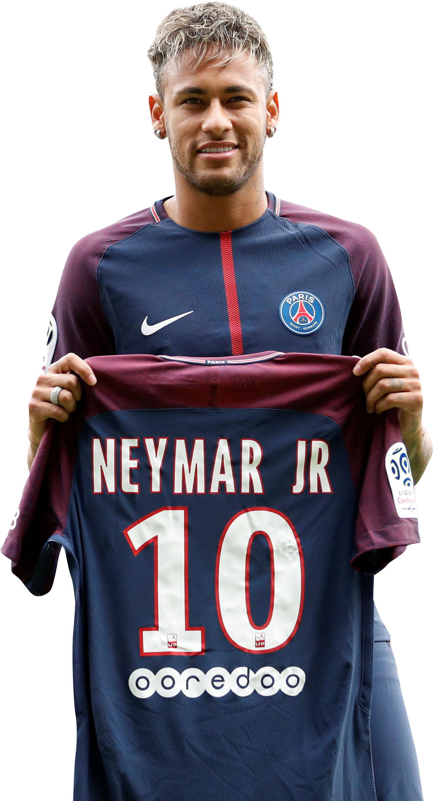

Saída de Neymar JR
O xogador Neymar JR., xunto con seu pai e o seu representante, comunicou ao Xallas FC esta mañá a súa decisión de marchar da Entidade.
Ante este posicionamento, o Club comunicoulles que os remite á cláusula de rescisión do seu contrato en vigor, que dende o pasado 1 de xullo é de 222 millóns de euros, e que deberá ser aboada na sua totalidade.